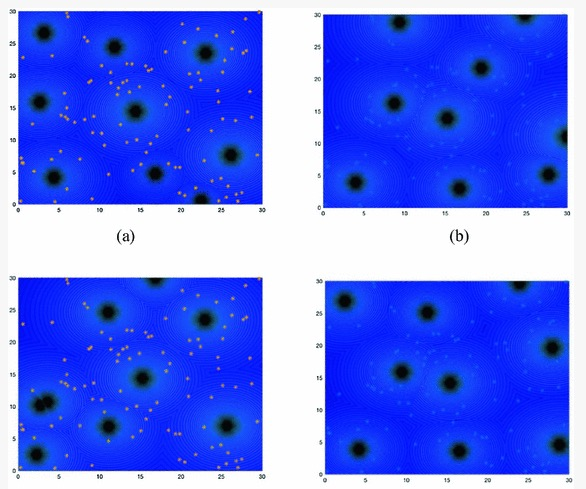

|
Jun Wang (王 俊)
Email : jun.wang.3@warwick.ac.uk
|
| CV | Google Scholar | Github |
|
Jun is a 2rd-year Ph.D. student at University of Warwick, UK, supervised by Prof. Abhir Bhalerao and Prof. Yulan He. Jun's research interests lie in the field of Computer Vision and Image Processing, particularly in high-level image understanding, e.g., Radiology Report Generation, and fine-grained visual categorization. He's also affiliated with the Integrated and Intelligent Systems, Griffith University, Australia supervised by Prof. Yongsheng Gao and Dr. Xiaohan Yu. Jun collaborated with them on a series of works.
Jun received his M.Sc degree in Artificial Intelligence with the best overall performance from King's College London (KCL) , London, UK.
|
News
- [Oct. 2022] One paper accepted to Pattern Recognition.
- [Aug. 2022] One paper accepted to ECCV AVVision workshop 2022.
- [July. 2022] One paper accepted to ECCV 2022.
- [Jan. 2022] One paper accepted to ICASSP 2022.
- [Oct. 2021] One paper accepted to BMVC2021.
- [Sep. 2021] One paper accepted to DICTA2021.
- [May. 2021] One paper accepted to ICIP2021.
- [May. 2021] I will purse a Ph.D. study at the lovely University of Warwick in October 2021. Go Bears!
- [Feb. 2021] One paper accepted to journal Cancers (IF 6.6)
- [Dec. 2020] I joined the ARC Research Hub for Driving Farming Productivity and Disease Prevention, Australia and the Integrated and Intelligent Systems, Griffith University, Australia as reseasrch intern supervised by Prof. Yongsheng Gao and Dr. Xiaohan Yu.
- [Sep. 2020] I obtained a silver medal in Kaggle Mechanisms of Action (MoA) Prediction Competition.
---- show more ----
- [Sep. 2019] One paper accepted to International Conference on Swarm Intelligence (ICSI) 2019 Oral
- [Sep. 2019] One paper accepted to 2019 IEEE Congress on Evolutionary Computation (CEC) 2019 Oral
- [Nov. 2018] Two papers accepted to 2018 International Conference on Bio-Inspired Computing: Theories and Applications (BIC-TA)
|
---- show more ----
|

|
HCO-Based RFID Network Planning
Jun Wang, Jinsong Chen, Qianying Liu, Jia Liu, Hong Wang, Li Li
International Conference on Bio-Inspired Computing: Theories and Applications (BIC-TA), 2018
*: equal contribution
| pdf |
|
Research Experiences
- [Jan. 2021] Research Internship, Integrated and Intelligent Systems, Griffith University, Supervised by Prof. Yongsheng Gao and Dr.Xiaohan Yu
- [Sep. 2020] Research Internship, King's College London, supervised by Dr.Miaojing Shi
- [May. 2018] Research Internship, Digital Intelligent Management Laboratory, Shenzhen University, Supervised by Prof. Ben Niu
|
Awards
- China Scholarship Council- University of Warwick Scholarship, June. 2021
- Bronze Medal, Hacking the Kidney Competition, Kaggle, May. 2021 (ranked 61/1216)
- Best Overall Performance, King's College London, Nov. 2020
- Silver Medal, Mechanisms of Action (MoA) Prediction Competition, Kaggle, Sep. 2020
- Outstanding Results, KDD Cup 2020 Challenges for Modern E-Commerce Platform: Multimodalities Recall (ranked 20/1433), Mar. 2020
- Silver Medal, Deepfake Detection Challenge, Kaggle, Dec. 2019
- JinWen Zhang (章文晋) Scholarship, South China Normal University, 2019
---- show more ----
- Outstanding Graduates, South China Normal University, 2019
- University Scholarship, South China Normal University, 2019
- University Scholarship, South China Normal University, 2018
- University Scholarship, South China Normal University, 2017
- Third Prize, Group Programming Ladder Tournament at China Collegiate Computing Contest, 2017
|
| Service
|
|
Teaching Assistant, Computer Vision (20-21), King's College London
|
| Professional Activity
|
|
IEEE Transactions on Multimedia (TMM).
|
|
IEEE Journal of Biomedical and Health Informatics (J-BHI)
|
|
IEEE Transactions on Medical Imaging (TMI)
|
| Contact
Department of Computer Science
University of Warwick
Coventry, CV4 7AL, UK
|
|